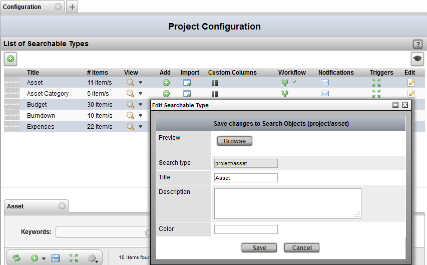
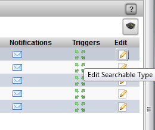
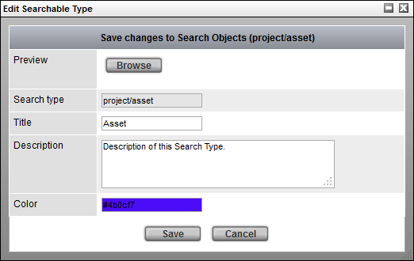

1) First, open the Configuration View under:
Project Startup -> Configuration

2) Next (assuming a Searchable Type has already been created), click on the Edit button corresponding to the search type to edit.

3) Finally, the edit pop-up will appear to allow modifiications to the sType.

Note
The field Search Type, indicating the name of the Search Type cannot be modified once the type has been created.